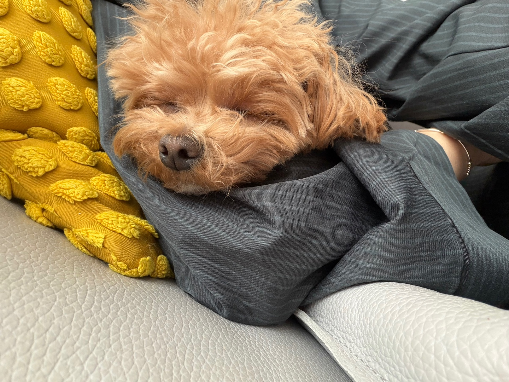
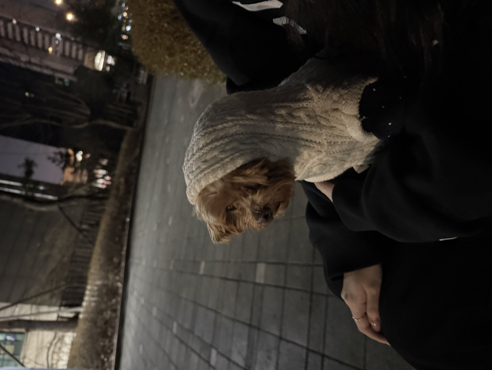

말티즈와 푸들을 교배하여 만든 믹스견으로, 두들의 한 종류이다. 켄넬클럽에 등재된 정식 품종은 아니나 포메라니안과 스피츠의 교배종 폼피츠, 골든 리트리버와 푸들의 교배종 골든두들처럼 최근 인기를 얻고있는 견종이다. 이런 견종은 세월이 흐르면서 정식 견종으로 정립될 가능성도 있다.

말티즈와 푸들을 1:1로 교배해 생성한 경우에는 외모는 푸들을 많이 닮는다. 일반적으로 곱슬 유전자가 우성이기 때문에 말티푸 또한 부모견 중 푸들의 곱슬이 우성으로 강하게 발현되어 외모(털)상으로는 말티즈보다 푸들을 많이 닮은 것처럼 보인다. 털 깎는 스타일에 따라서 외모가 달라 보인다. 푸들처럼 다리쪽 털만 남기고 말끔하게 깎으면 영락없이 얼굴만 말티즈 느낌 나는 푸들이고, 털이 자라남에 따라 곱슬에 따라 차이가 있지만 대개 말티즈의 느낌이 강해진다.
말티즈 모견과 말티푸 부견, 또는 말티푸 모견과 말티즈 부견을 교배하여 생성하는 경우도 있다. 25%의 푸들과 75%의 말티즈가 섞인 경우이다. 이 경우에는 전체적으로는 흰색 털이지만 귀와 가슴만 크림색으로 되고 털이 약간의 곱슬이 섞인 직모에 가깝게 되고, 전체적으로는 말티즈를 많이 닮게 되지만 다리는 푸들을 닮아 긴 특징이 있다. 이런 조합을 선호하는 사람들도 많다.